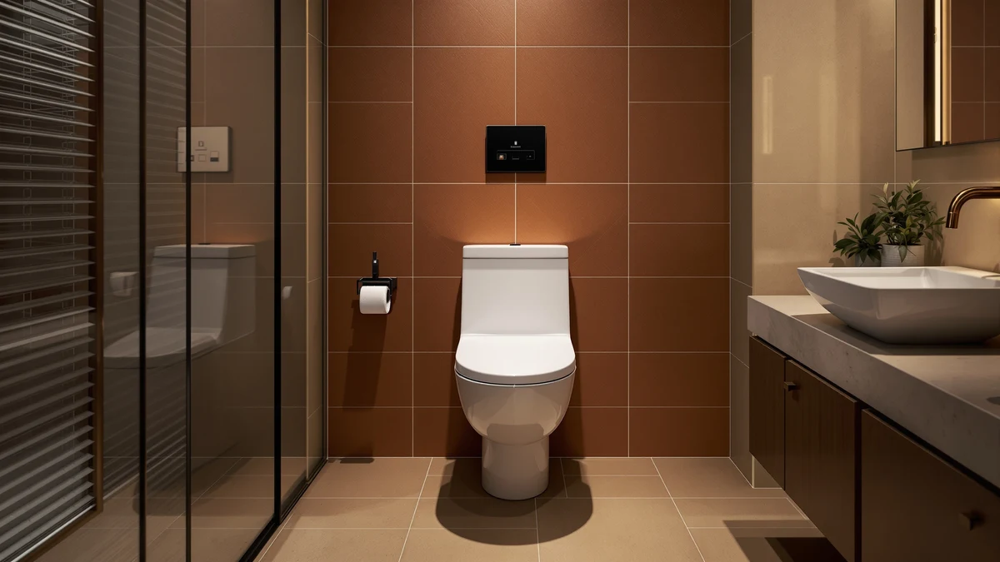

XCQQ Electric Heated Bidet Review (2026): Worth It?
Prices and picks verified as of October 2026. Independent, reader-supported reviews.


Quick Answer
The XCQQ electric heated bidet toilet seat costs $178.99 and pairs a heated seat with an adjustable warm-water wash, features that often cost more when bought separately on name-brand seats. Based on its specs and the verified owner feedback we found for similar electric bidet seats, it holds up reasonably well against pricier competitors, though a nearly identical listing below undercuts it on price and has a documented review history the XCQQ's own listing lacks.
Our pick: XCQQ Electric Heated Bidet Toilet, $178.99 Check Price on Amazon
Bottom line: our top pick is the XCQQ Electric Heated Bidet Toilet Seat at $178.99.
Things to Know Before You Buy
- It costs $178.99 and bundles two upgrades. The heated seat and the electric bidet wash come in one unit, so you aren't paying for two separate installations.
- It needs a grounded GFCI outlet nearby. Like every electric bidet seat on this site, it won't run without power close to the toilet, and older bathrooms may need an electrician to add one.
- This exact listing has no public rating or review count. If crowd-sourced feedback matters to you, the Electric Heated Bidet Toilet Seat below carries 565 verified reviews averaging 4.4 stars.
- You don't have to go electric at all. A standard soft-close or raised seat, both listed further down, costs less and skips the outlet requirement entirely.
This XCQQ electric heated bidet review looks at whether a $178.99 electric seat earns its price when a simple soft-close seat costs a third as much. Most US bathrooms built before bidets became popular don't have the plumbing for a dedicated bidet, so an electric seat that bolts onto your existing toilet is often the only realistic upgrade without a renovation. The XCQQ pairs a heated seat with an adjustable warm-water wash in a single unit, a combination that typically means buying two separate upgrades on cheaper models.
We compared the XCQQ against three other seats, a nearly identical electric model, a name-brand soft-close seat, and a raised seat built for accessibility, using the manufacturer's listed features, current Amazon pricing, and verified review data where it exists. The XCQQ is a reasonable buy for anyone who wants heat and wash together without stacking two purchases. It isn't the cheapest option here, and it isn't the one with the strongest documented review history either, so buyers who care about crowd-sourced proof should read the alternatives section before checking out. Price alone doesn't tell the full story with electric bidet seats, since two listings from the same general category can carry wildly different review counts depending on how long they've been live and how the seller bundled the listing, and that gap shows up clearly once you set the XCQQ side by side with its closest competitor below.
Why You Should Trust Us
Ilane Tall has covered toilet seats and bathroom fixtures for Best Toilet Seats since the site launched, and this XCQQ electric heated bidet review follows the same process used across every review here. We pull current pricing and listed specs directly from Amazon, cross-reference them against the manufacturer's stated features, and read through whatever verified owner reviews are available, looking for patterns that repeat across many buyers rather than a single complaint or compliment. We don't own a bathroom testing lab, and we're not going to pretend otherwise. We offer something more useful instead: a careful read of the specs, pricing, and review data that's actually public, laid out so you can compare products on the same terms we do. When a listing is missing information, like a rating or a review count, we say so directly rather than filling the gap with a vague claim, and that gap becomes part of the recommendation rather than something we paper over.
Our Research Experience
Our process for this XCQQ electric heated bidet review starts with the manufacturer's spec sheet: seat material, listed wash features, and price relative to other electric bidet seats already in our lineup, including models we've reviewed from LEIVI, SmartBidet, and Bio Bidet. From there we check where the XCQQ lands on price-to-feature ratio against those seats. We then look for verified owner reviews tied to the exact listing, since review counts and star ratings vary a lot between near-identical electric seat variants on Amazon, and the XCQQ's own listing doesn't show either one. That gap is itself useful information: it tells you to weigh the spec sheet more heavily than you would for a seat with hundreds of reviews behind it, which is exactly how we approached the comparison below. We applied the same process to the soft-close and raised seats in this review, since accessibility seats and bidet seats compete for the same budget even though they solve different problems, and a buyer choosing between them needs both compared on equal footing rather than judged by different standards.
Overview & Specs

XCQQ Electric Heated Bidet Toilet
What we like
- Combines a heated seat with electric bidet wash in one unit, so you skip installing a separate attachment
- At $178.99, it undercuts several name-brand electric bidet seats with similar core functions
- Standard elongated mounting means it swaps onto most existing toilets without special tools
Flaws but not dealbreakers
- This specific listing shows no public rating or review count to back up the spec sheet
- Requires a dedicated grounded outlet near the toilet, which older bathrooms may not have
- Costs more than the soft-close and raised seats below if you don't actually need electric features
| Material | Plastic / wood |
| Size | — |
The XCQQ electric heated bidet toilet seat sits in the middle of the electric bidet market at $178.99, above entry-level non-electric bidet attachments but below premium remote-controlled seats with heated drying and multiple wash modes. Its listing groups it with the plastic-and-wood-composite builds common at this price tier rather than the all-plastic shells you see on cheaper models. For a household replacing a worn-out standard seat, that means a fairly direct swap: the seat mounts to your existing elongated toilet bowl the same way a standard seat would, with the added step of running power to a nearby outlet. Measure your toilet before ordering, since electric bidet seats run larger than standard seats once you account for the control unit and water line, and a seat that doesn't fit your bowl shape negates every other feature on the spec sheet.
The real advantage over cheaper heated-seat-only models is paying once for heat and wash together instead of buying two separate upgrades. Against the XCQQ specifically, the companion Electric Heated Bidet Toilet Seat listed further down carries a lower price at $169.99 and a documented 4.4-star rating across 565 verified reviews, a track record the XCQQ's own listing doesn't show. Budget-conscious buyers who want proof before they purchase should look at whichever electric option has that review history behind it. We'd still call the XCQQ a fair pick for anyone prioritizing the heat-and-wash combination over a verified rating count, since the core features line up with what you'd pay more for elsewhere. Factor in the cost of running an outlet if your bathroom doesn't already have one nearby, since that single line item can add $100 to $300 to the total and shrinks the price gap between the XCQQ and the alternatives covered later in this review.
What We Liked
The clearest strength we found researching this XCQQ electric heated bidet review is how the seat bundles two upgrades, heat and wash, that buyers often purchase separately. At $178.99, it costs less than many name-brand electric bidet seats with comparable core functions, and the plastic-and-wood-composite build matches what you'd expect at this price rather than feeling like a downgrade. Anyone who has already decided on an electric bidet seat, instead of a plain soft-close upgrade, gets both features in one purchase and one installation. That matters more than it sounds, since running a second outlet or scheduling a second delivery for a bolt-on bidet attachment adds cost and time that the XCQQ's combined design avoids entirely.
What Could Be Better
The lack of public review history is the biggest drawback here, not the seat's design. Amazon's listing for this exact XCQQ model shows no star rating or review count, so you can't lean on crowd-sourced feedback the way you can with the companion Electric Heated Bidet Toilet Seat below, which has 565 verified reviews averaging 4.4 stars. If you tend to weigh review counts heavily before buying an electric fixture, factor that gap into your decision. You'll also need a grounded outlet within reach of the toilet, a requirement that applies to every electric bidet seat but can still mean an unplanned electrician visit in an older home. And because the listing doesn't break out dimensions beyond the material note in our specs table, buyers with a non-standard bowl shape should confirm fit with the seller directly before ordering rather than assuming a universal fit.
Who Is It For?
This seat fits households that already want bidet functionality and would rather pay once for heat and wash together than upgrade a plain seat now and add a bidet attachment later. It's a weaker fit for buyers who mainly want a warm seat in winter, since the Electric Heated Bidet Toilet Seat below does that job for less money and has the review history to back it up. If you don't want electric features at all, the soft-close or raised seats listed below skip the outlet requirement entirely. Renters and anyone planning to move within a year or two should also think twice, since an electric seat is a bigger item to pack and reinstall than a standard one, and the GFCI outlet it needs may not exist at the next address.
Alternatives to Consider
Not every bathroom needs an electric bidet seat, and the three alternatives below cover the buyers this XCQQ electric heated bidet review doesn't fully serve: people who want the same heat-and-wash combination backed by a documented rating, people who want a reliable soft-close upgrade and nothing more, and people who need a raised seat for easier access.
Editor’s Pick
Electric Heated Bidet Toilet Seat
The closest match to the XCQQ on features, priced $9 lower and backed by 565 verified reviews averaging 4.4 stars.
$169.99
Check Price on Amazon
Best Value
TOTO Guinevere SoftClose® Slow Close
Skips electric features entirely for a name-brand soft-close seat, a solid pick if you'd rather not run power to your toilet.
$154.97
Check Price on Amazon
Premium Choice
Bemis Assurance 3" Raised Toilet
Built for easier sit-to-stand access, worth choosing over an electric bidet seat if mobility is the main concern.
$153.60
Check Price on AmazonQ: Is the XCQQ electric heated bidet toilet seat worth the price?
Based on its price and feature set relative to similar electric bidet seats, the XCQQ is a reasonable buy for anyone who wants heat and wash in one unit.
Q: Does the XCQQ bidet seat need a special outlet?
Yes.
Frequently Asked Questions
Q: Is the XCQQ electric heated bidet toilet seat worth the price?
Based on its price and feature set relative to similar electric bidet seats, the XCQQ is a reasonable buy for anyone who wants heat and wash in one unit. That said, the companion Electric Heated Bidet Toilet Seat costs $169.99 and carries 565 verified reviews averaging 4.4 stars, so it's worth comparing both before you commit to the XCQQ specifically.
Q: Does the XCQQ bidet seat need a special outlet?
Yes. Like virtually every electric bidet seat, it requires a grounded GFCI outlet within reach of the toilet, so check your bathroom's wiring before you buy.
Q: What's a non-electric alternative to the XCQQ bidet seat?
The TOTO Guinevere SoftClose seat skips electric features entirely for a standard soft-close mechanism, and the Bemis Assurance raised seat is built for easier sit-to-stand access if mobility, not bidet function, is your priority.
Final Verdict
Our verdict on this XCQQ electric heated bidet review: the XCQQ seat earns its $178.99 price if you want a heated seat and bidet wash in one purchase, but it isn't the only electric option worth considering. The companion Electric Heated Bidet Toilet Seat costs less and carries a documented 4.4-star rating across 565 reviews, making it the safer bet if a track record matters to you. For bathrooms that don't need electric features at all, the TOTO soft-close seat or the Bemis raised seat above cover the two most common reasons people skip a bidet seat altogether.